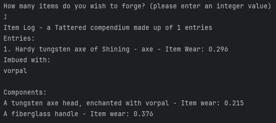

Fantasy Item Generator
<Back to main page>Seeking a way to connect my creative writing class to my interest in programming, I created this project as a sort of "Writing Prompt Generator". Whenever I'm at a loss for ideas in creative writing, I open up this program and run it to decide which mythical object I'm going to spend my warm-up period writing about.
Upon running the program, the user is asked to specify a number of items to generate. Once the program has this information, it generates a "compendium" of items, each with their own procedurally generated parts with their own randomly generated enchantments and wear values. These stats are aggregated into the description of the overall tool with a basic grammar parsing algorithm.
Take this following image as an example.

The user requests 1 item to be created. The program creates a hardy tungsten axe. Every item will have a prefix that expresses its defining quality. The "of Shining" suffix indicates that the item is enchanted with the "Shining" enchantment which further alters its properties. Items will not always be enchanted, but I've given them a good chance to be as it makes them more interesting to play around with creatively.
Next, the item type is listed again so that the user can easily see what type of item has been created. Finally, a wear value between 0 and 1 is assigned to the item based on the average wear value of its components. Every item is made up of components that contribute to its properties. For example, this axe is made with a tungsten axe head that is enchanted with "Vorpal". These modifier enchantments are listed below the item.
In the future, I plan to repurpose the logic from this project into a game that allows players to utilize the items generated in unique ways based on their properties. The modularity and expandibility of this project was a major focus throughout its development, and it stands as one of my most-used tools that I've developed to date.
<Back to main page>